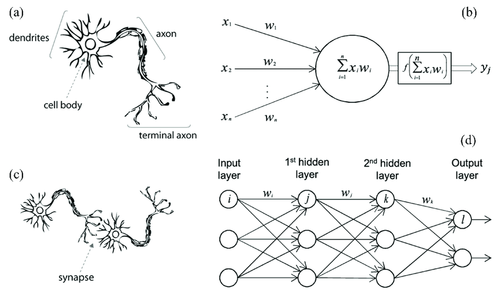
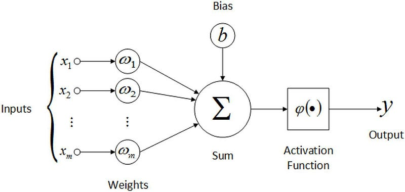
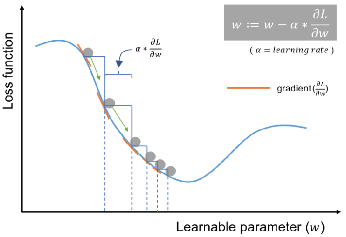
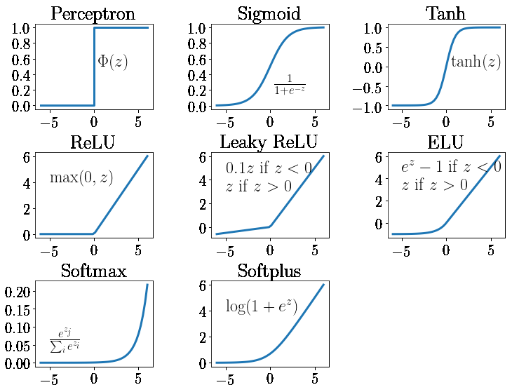

In the era of artificial intelligence, from image recognition and speech recognition to NLP one of the most audible fancy term is "NEURAL NETWORKS”. In this blog lets try to understand what is a neural network and how does it work, How does it learn and predict.

A neural network is a set simple or complex algorithms that are connected in a specific order , which are used to classify or predict patterns based on given data by doing mathematical calculations. Neural network structure and working is inspired from neuron present in the human brain. Neuron in the brain takes information at tail and passes it as electrical signals to the head part which passes it to the next neutron. similarly artificial neuron in a neural network takes input and gives output which interm becomes the input for the next layer of neurons, at last the result will be given.
In a neural network the input data is converted into numbers and some calculations are done which gives us the output. All the data is converted into numerical form and feed into the neural network, then the neural network observes the patterns in the data and make predictions
Consider an equation y=w*x + b, here w is called weight and b is called bias. Each node in a neural network have their own weight and bias. At first these are random values (may also be zeroes) later on training the weights and biases gets adjusted such that they fit for the patterns observed in the data.
There are mainly two steps in training a neural networks.
1. Forward propagation
2. Backward propagation
As the name suggests the process of feeding input data in forward direction from the first layer to the last layer to produce a result. After one time forward propagation in done , the neural network gives an output. Here are the mathematical calculations done in one layer of a neural network during forward propagation.
Let the current node be "L" , then "L+1"th node will be the next node.
w(L)=weight of "L" th node
b(L)= bias of "L" th node
x=input to the current neuron
From the equation we have discussed earlier:
z(L)= w(L)*x+b(L)
z(L) is called as weight-sum of the "L" th node.
The calculated weight sum is passed to an activation function. An activation function is a mathematical function which adds non-linearity to the network.
a(L)= activation(z(L))
a(L) is called as activated weight sum. This a(L) is passed as the input for the next node.
z(L+1) = w(L+1) * a(L) + b(L+1)
a(L+1)=activation(L+1)
The output of the activation function of last layer is the output of the neural network which is denoted by "y".

Forward propagation produces a result based on the weights and biases of the nodes. What if the current weights and biases are not well fitted for the prediction as they are initialised to random values at the start , so there is a need of correcting the weights and biases. This is where back-propagation comes into the picture.
Back propagation calculates the errors in the weights and biases which are further corrected.
Let y be the output obtained after forward propagation and m be the number of nodes in the current layer .
Consider ‘L’th layer be any layer.
calculating the gradients of the loss with respect to z(L)
dz(L)=a(L)* activation’(z(L))
Here activation’ represents the derivative of activation function at that layer.
calculating the gradients of the loss with respect to weights and biases
dw(L)=(1/m)*(dz(L)*a(L-1))
db(L)=(1/m)* sigma[i=1 to m] dzi(L)
Note : db(L)= (1/total number of nodes)*(sum of dz values of all the nodes in the current layer). It is basically the average of the dz values in the current layer.
calculating the gradients of the loss with respect to activations of l-1 th layer.
da(L-1)=w(L)*dz(L)
Note : for the last layer, dz= output given by neural network - original value.
Updating the values :
Let alpha be the hyper parameter that decides for how many steps parameters have to be updated. It is called as learning rate.
w(L)=w(L)- alpha*dw(L)
b(L)=b(L)-alpha*db(L)
This algorithm (forward and backward propagations combinedly) executed again and again during the training of neural network. After training weights and biases values gets adjusted as per the data. When a new input is given , the neural network predicts the result by doing forward propagation.
Let's build a simple neural network with two hidden layers each having 10 nodes each. In the first layer RELU activation function is used and in the second layer softmax activation function is used.
Finding the derivation of activation functions is not that hard as it seems to be. In our neural network, derivation of the relu function can be taken from the slope of the graph i.e.., if value>0 slope is 1 or else it is 0.
import pandas as pd
import numpy as np
def init_params():
w1=np.random.rand(10,784)
b1=np.random.rand(10,1)
w2=np.random.rand(10,10)
b2=np.random.rand(10,1)
return w1,b1,w2,b2
def relu(z):
return np.maximum(0,z)
def softmax(z):
return np.exp(z)/np.sum(np.exp(z))
def deivative_relu(z):
return z>0
def one_hot(y):
one_hot_y=np.zeros((y.size,y.max()+1))
one_hot_y[np.arange(y.size),y]=1
one_hot_y=one_hot_y.T
return one_hot_y.T
def forward_propagation(w1,b1,w2,b2,x):
z1=w1.dot(x)+b1
a1=relu(z1)
z2=w2.dot(a1)+b2
a2=softmax(z2)
return z1,a1,z2,a2
def back_propagation(z1,a1,z2,a2,x,y):
m=y.size
one_hot_y=one_hot(y)
dz2=a2-one_hot_y
dw2=(1/m)*(dz2.dot(a1.T))
db2=(1/m)*np.sum(dz2,2)
dz1=w2.T.dot(dz2)*deivative_relu(z1)
dw1=(1/m)*(dz1.dot(x.T))
db1=(1/m)*np.sum(dz1,2)
return dw1,db1,dw2,db2
def update_param(w1,b1,w2,b2,dw1,db1,dw2,db2,alpha):
w1=w1- dw1*alpha
b1=b1- db1*alpha
w2-=dw2*alpha
b2-=db2*alpha
return w1,b1,w2,b2
def get_accuracy(predictions,y):
print(predictions,y)
return np.sum(y==predictions)/y.size
def get_predictions(a2):
return np.argmax(a2,0)
def gradient_descent(x,y,iterations,alpha):
w1,b1,w2,b2=init_params()
for i in range(iterations):
z1,a1,z2,a2=forward_propagation(w1,b1,w2,b2)
dw1,db1,dw2,db2=back_propagation(z1,a1,z2,a2,w2,x,y)
w1,b1,w2,b2=update_param(w1, b1, w2, b2, dw1, db1, dw2, db2, alpha)
if i%10==0:
print('iteration number :',i)
print('accuracy :',get_accuracy(get_predictions(a2)),y)
return w1,b1,w2,b2
w1,b1,w2,b2=gradient_descent(x_train,y_train,100,0.1)
published on: Monday, 15-jan-2024 , 11:53:07 AM